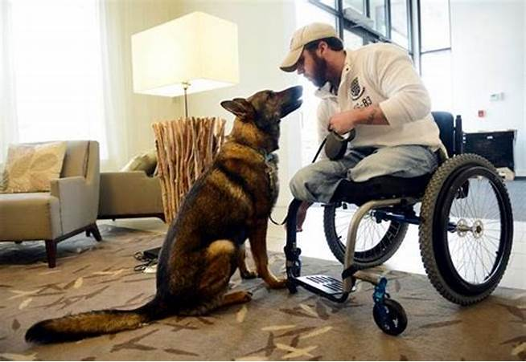

Support
Links
websites below where you can find more infromation related to these topics.
Ways dogs can help
Guide dogs were perhaps the first iteration of service dogs as we know them today.Then there is seizure alert dogs they are trained to recognize the signs that their handlers are about to have a seizure, and alert them from there. Lastly there is Psychiatric service dogs they help provide a comforting in times of distress and help provide personal space. This is just a few examples of task a sevice dog can provide.
Training

There are many non-profit organizations that provide service animals for those with disabilities. Charities are able to give service dogs away for free. Others, offer service dogs to those in need at a reduced price. One of the best options for obtaining a service dog affordably is training your dog yourself through online training courses. These courses are typically put together by professional trainers who record instructional videos, write detailed content and exams, and are often available to answer any questions you have.